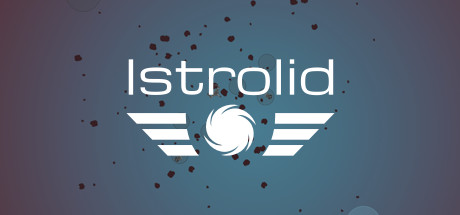
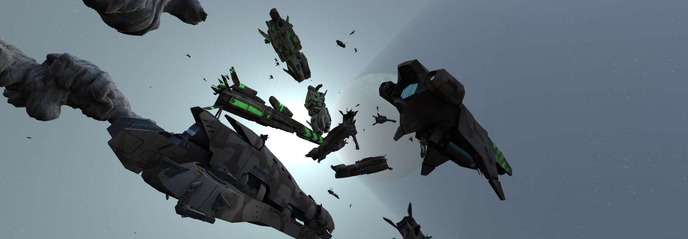
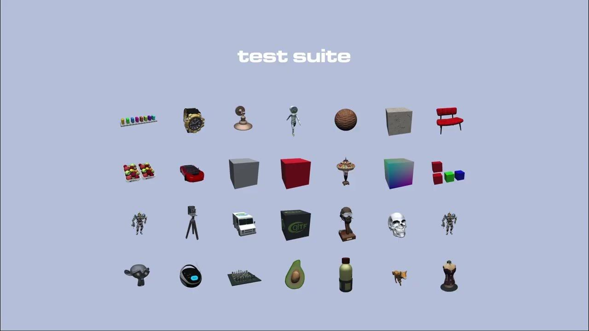
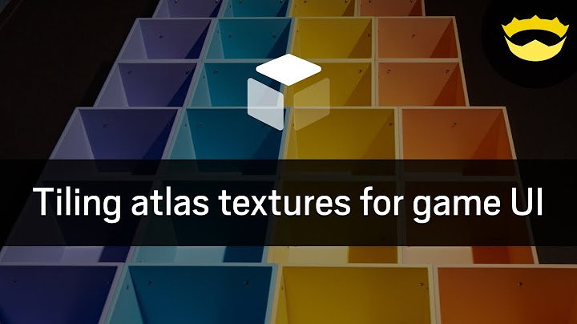
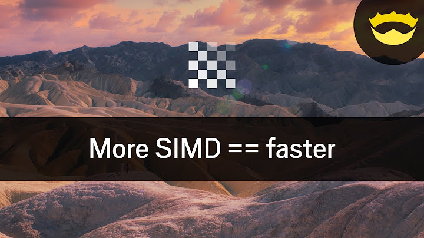
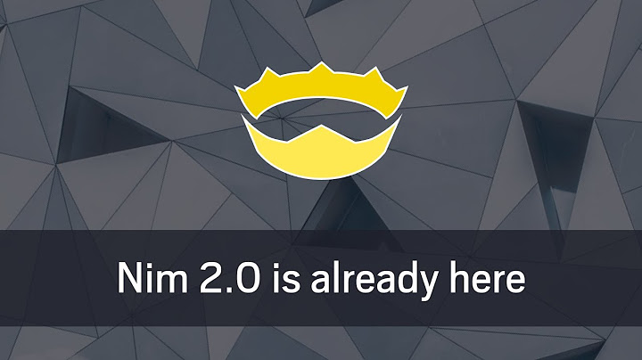
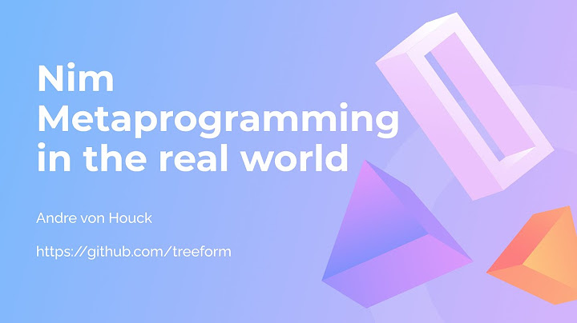
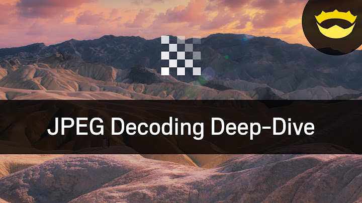
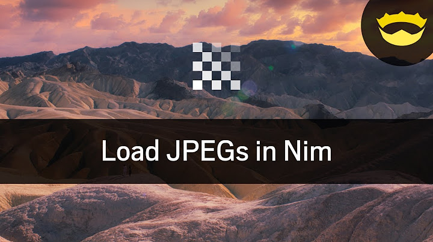
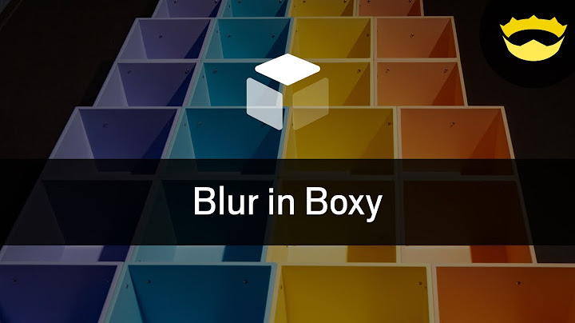

Istrolid
Design custom spaceships and command your fleet in real-time strategy battles.
Games / Libraries / Videos
A collection of things I build.
Mostly Nim. Always something new to try.

Design custom spaceships and command your fleet in real-time strategy battles.
A science-fiction combined-arms shooter with infantry combat, vehicles, and pilotable capital ships.

A multiplayer real-time strategy game about commanding fleets in three-dimensional space battles.
No libraries match this search.
From the hobby collection, built with Guzba and other contributors. Select a library to explore.







